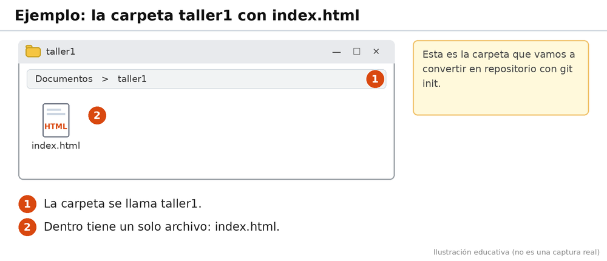
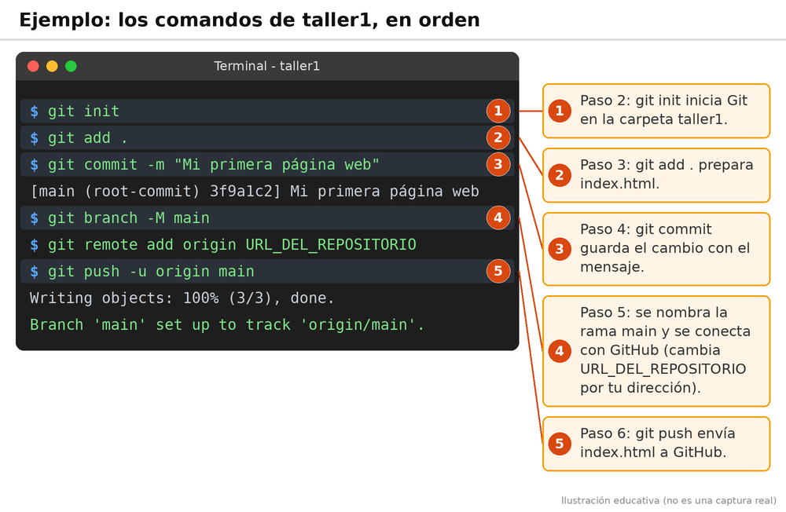
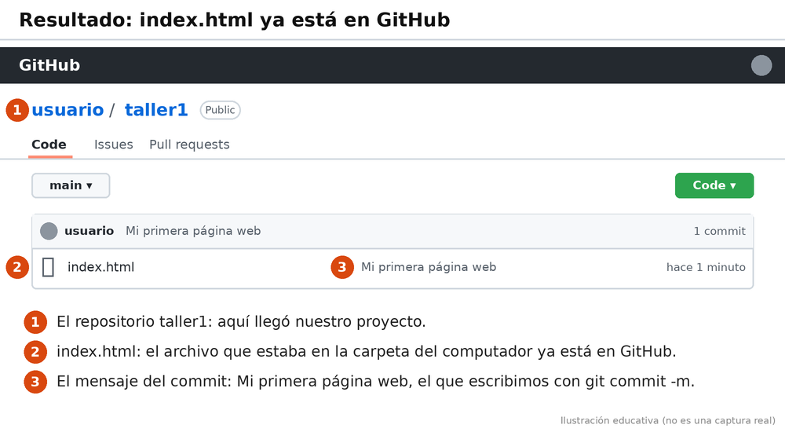
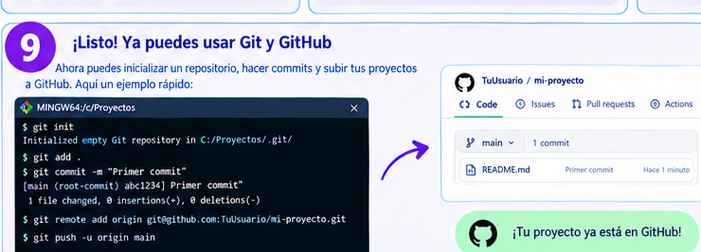

En este ejemplo vamos a imaginar que tenemos una carpeta llamada taller1, donde guardamos nuestro archivo index.html. Queremos utilizar Git para registrar los cambios y GitHub para guardar nuestro proyecto en internet.
Primero creamos una carpeta llamada taller1 y dentro guardamos nuestro archivo index.html.

Abrimos la terminal en la carpeta del proyecto y escribimos el siguiente comando:
git init
Utilizamos el siguiente comando para preparar los archivos que queremos registrar.
git add .
Ahora registramos los cambios y escribimos un mensaje para identificar nuestro trabajo.
git commit -m "Mi primera página web"
Creamos un repositorio en GitHub y conectamos nuestra carpeta con él. Reemplazamos URL_DEL_REPOSITORIO por la dirección verdadera del repositorio.
git branch -M main
git remote add origin URL_DEL_REPOSITORIO
Por último, utilizamos este comando para enviar nuestro proyecto al repositorio de GitHub.
git push -u origin main

Si todo está configurado correctamente, podremos entrar a GitHub y encontrar nuestro archivo index.html guardado en el repositorio.

Este ejemplo nos ayuda a comprender cómo utilizar Git y GitHub para mantener nuestros trabajos organizados.
Este es un ejemplo rápido con todo lo anterior ya configurado. Es distinto del ejemplo de taller1: aquí la carpeta se llama C:/Proyectos, el archivo se llama README.md y la dirección del repositorio es de tipo SSH.
Primero creamos en GitHub un repositorio nuevo llamado mi-proyecto (botón + de arriba a la derecha y luego New repository). Después abrimos Git Bash dentro de la carpeta del proyecto y escribimos los comandos de la imagen, uno por uno:

Para terminar, entramos a la página del repositorio en GitHub y actualizamos la página. Debe aparecer el archivo README.md, con el mensaje "Primer commit" y la indicación de hace cuánto se subió (por ejemplo, "Hace 1 minuto"). Eso significa que nuestro proyecto ya está en GitHub.